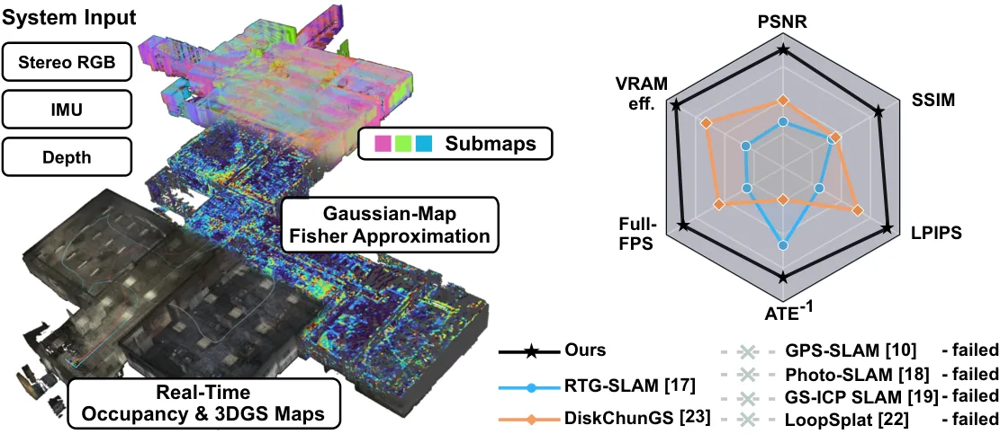
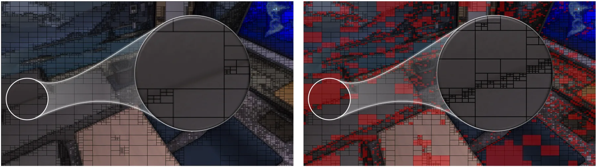
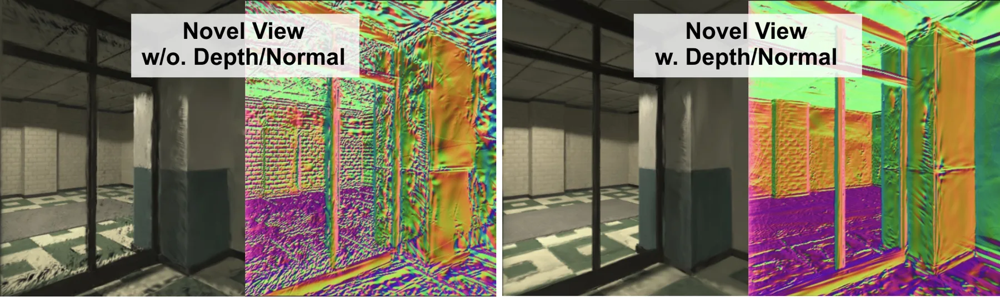
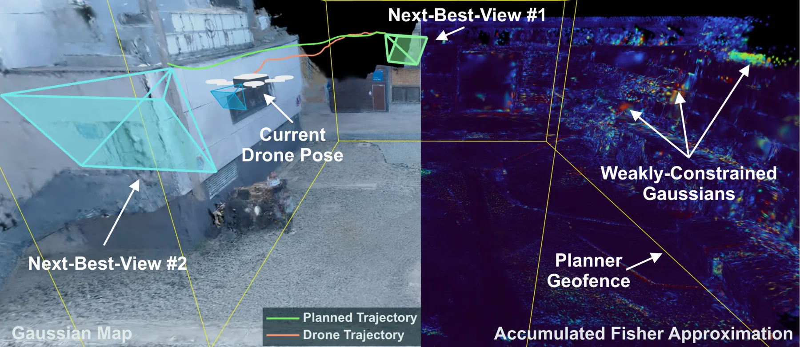
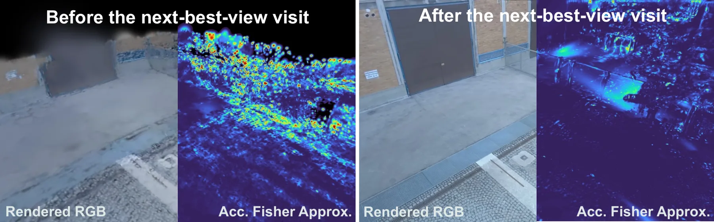

GOFusion：把高斯锚在占据子图上，用 Fisher 信息指导自主导航的实时建图
GOFusion: Real-Time Gaussian-Occupancy Submap Fusion for Fisher-Informed Autonomous Robot Navigation
把 OKVIS2-X 的占据子图当作骨架：每个子图同时持有位姿、占据地图、高斯原语与一份累积 Fisher 近似；位姿修正只作用在子图位姿上，高斯参数不用重优化就能跟着走。初始化用改进的四叉树双阈值分解加和面积表（O(1) 矩形求和），在线优化只优化活跃子图，并联合优化高斯与相机位姿；Fisher 通过对光栅化器反向传播喂全 1 上游梯度、只取位置与不透明度四维对角块来在线累积，成本可忽略。Fisher 既用于按覆盖率打分剪枝，也用于 NBV 打分（用历史 Fisher 的倒数加权候选视角的敏感度）。TUM 上 PSNR 21.84、LPIPS 0.192，uHumans2 公寓序列 33.09 PSNR、ATE 0.015 m、2.4 GB 显存、35.23 FPS。
作者、单位与技术谱系 · Research context
作者与单位
研究脉络
- OKVIS2-X（Leutenegger 实验室的 VIO/建图系统）方法基座关系：GOFusion 直接继承其视觉惯性状态估计、局部占据子图与子图对齐机制，子图定义与位姿输入都来自它。[论文第 I 节、第 III 节与参考文献 [11]]
- GSFusion（四叉树图像分解与几何引导高斯）方法上游关系：本文沿用其四叉树图像分解来做高斯初始化，并把单阈值扩展成双阈值判据、用和面积表把矩形求和降到 O(1)。[论文第 III-B 节与图 3、表 I]
- LoopSplat / DiskChunGS（子图化与分块高斯）方法上游关系：两者分别解决“回环后高斯能否整体刚性变换”和“显存随场景增长”，本文把这两点与占据地图合并到同一子图结构里。[论文第 II-B 节与表 II]
合作网络
- TUM 与 ETH Zurich（Mobile Robotics Lab）Technical University of Munich → ETH Zurich关系：共同署名/联合实验室[arXiv v1 TeX 源作者块]
- TUM MIRMI 与 Huawei TechnologiesTechnical University of Munich（MIRMI Seed Fund） → Huawei Technologies关系：资助/致谢[论文致谢]
- TUM University Hospital 与 MIRMIHuman-Centered Computing and Extended Reality Lab（TUM University Hospital） → Munich Institute of Robotics and Machine Intelligence（MIRMI）关系：共同署名[arXiv v1 TeX 源作者块]
- GOFusion 官方代码论文 → github.com/Bennnoo/GOFusion关系：官方代码[论文摘要中的代码与视频链接]
作者单位、联合隶属与资助信息取自 arXiv v1 TeX 源与致谢，属事实。与 OKVIS2-X、GSFusion、LoopSplat 的技术接续基于正文自述与引用关系，属有来源的解读；论文未标注通讯作者，也未公开更深的实验室隶属或师生关系，未做推断。Hannah Schieber 与 Daniel Roth 的医院署名只说明人事隶属，本文不涉及医疗数据。
方法本质拆解 · What actually changed
是不是微调？
不是预训练模型的微调，而是在线优化：没有离线训练阶段，高斯原语在跑到每个子图时现场初始化并优化，VIO（OKVIS2-X）与深度网络都是现成组件。每个子图只在活跃期可训练，离开活跃状态后参数冻结，会话末尾再做一次全局高斯精化。
有没有额外约束？
输入侧需要 RGB、深度与 IMU，深度既用于初始化也用于监督；损失含 RGB、SSIM、深度 L1 与法向一致性（法向项里的不透明度 detach）。结构约束是“每个高斯绑定到某个子图坐标系、每个子图绑定到某个占据地图”，位姿修正以子图为单位整体施加；Fisher 侧用对角近似与同方差噪声假设做降维。
推理/后端到底做了什么？
在线流程是：VIO 出位姿与占据子图 → 双阈值四叉树选点并反投影初始化高斯 → 活跃子图内做含位姿增量的联合优化 → 复用反向传播累积 Fisher → 按 Fisher 打分剪枝或给候选视角打分。没有全局 BA 参与建图，回环只通过子图位姿修正传导；全局高斯精化在会话结束后离线跑一次。
方法本质是什么？
本质是把“地图”做成两层共享同一坐标系的复合体，并让位姿修正只作用在坐标系上，从而用很小的代价同时保持几何与外观一致；再把渲染对参数的敏感度借来当信息量，使“哪里约束不足”变成可规划的量。它没有做的是完整的 Fisher 矩阵、跨子图联合优化、动态物体处理与深度不确定性建模。
输入 VIO 位姿、立体 RGB、IMU 与深度 → 把高斯锚在占据子图上、只在活跃子图内联合优化位姿与高斯 → 借渲染反向传播累积对角 Fisher → 得到可用于剪枝与下一最佳视角选择的实时混合地图。

桥接价值Bridge
桥接价值
GOFusion 补的是“地图—规划”之间常被忽略的一环：占据地图能保证碰撞安全但没有外观，高斯地图外观好但不区分自由空间与未知空间，两者此前只在重建方向耦合（GSFusion、GPS-SLAM 用几何改重建），没有真正服务导航。本文让两个图层共享同一子图坐标系，位姿修正一次作用到两层，并把每个高斯原语的 Fisher 敏感度变成规划器可用的信息量。对可靠状态估计方向的意义是：它给出一套在线、近零成本的地图不确定性代理量，可以作为“哪里还没被观测约束住”的可观测性指标，而不只是渲染诊断。
方法与模块Method
方法摘要
系统建在 OKVIS2-X 之上，输入是 M 个局部占据地图 O_m 及其位姿 T_WO_m、校正后的 RGB 与深度。完整地图定义为子图集合，每个子图含位姿、占据地图、高斯原语与累积 Fisher 近似；高斯参数 59 维（中心、四元数、对数尺度、不透明度 logit、3 阶球谐 3+45 维），子图坐标系与占据地图原点重合。初始化用四叉树分解，节点在“内部对比度高”或“与周围带的对比度高”任一条件成立时细分（双阈值），并用和面积表把矩形求和降到 O(1)，每个叶节点反投影出一个高斯。在线优化只在活跃子图上做，损失含 RGB、SSIM、深度与法向项，并把位姿增量作为可优化变量联合求解；会话结束后再合并所有子图做全局精化。Fisher 分支复用光栅化器的前向缓冲与反向传播，以全 1 上游梯度得到通道求和的敏感度，只保留位置与不透明度四维对角，按 η=0.2 做指数平滑累积。
可迁移模块
第一个可迁移模块是“子图级位姿修正、图层参数不变”的结构：回环或 BA 修正只动子图位姿，占据地图与高斯原语随坐标系整体变换，不需要重优化，这与你做多会话/大场景地图维护时的“局部刚性、全局图优化”思路一致。第二个是 Fisher 近似的实现技巧：不额外求导，而是给渲染图喂全 1 上游梯度、复用已有反向传播，取四维对角块，几乎零成本——任何用可微渲染或可微优化的管线都能照搬这个“借梯度当敏感度”的做法。第三个是剪枝与 NBV 共用一个分数：χ_i 用位置/不透明度 Fisher 与覆盖面积的秩百分位组合，Γ(v) 用历史 Fisher 倒数加权候选视角敏感度，两者都建立在同一份累积量上，便于在线维护。

证据Evidence
关键证据与数字
TUM RGB-D（表 I，GT 位姿，10 次平均）：PSNR 21.84 对 PhotoSLAM 21.30、GSFusion 20.23；LPIPS 0.192 对 0.205；建图 32.86 FPS；0.53M 高斯仅占 1.9 GB，而 GSFusion 0.10M 占 2.1 GB（高斯多 5.3 倍、显存 0.9 倍）。uHumans2 公寓序列（表 II，估计位姿）：PSNR 33.09 对 DiskChunGS 29.15、LoopSplat 25.24；LPIPS 0.062 对 0.110；ATE 0.015 m 对 LoopSplat 0.046、GS-ICP 1.581；Full-FPS 35.23；显存 2.4 GB 对 LoopSplat 42.8 GB。办公室序列 31.14 对 24.49，地铁序列 29.99 对 26.11（ATE 0.180 m）。消融（表 IV，uHumans2）：单图 25.01 PSNR 与 15.7 GB → 多子图 29.68 与 6.6 GB → 多子图加联合位姿优化 29.92 与 5.7 GB，ATE 从 0.150 降到 0.124（单图）与 0.134（多子图）。真实飞行：在线增量优化 16.35 PSNR、0.611 LPIPS，全局精化后 24.86–25.03 PSNR、0.157–0.259 LPIPS。
边界与下一步Limits & Next Step
边界与风险
作者明确承认三点：方法假设深度估计准确且稳健，深度与法向监督的权重需要仔细调；为省算力只优化一个子图，会在相邻子图重叠或错位处限制在线渲染质量，半静态或动态场景下更明显；未来工作才把深度不确定性与跨子图优化纳入。我们要补的待核验项：一是 Fisher 只是 59 维状态里位置与不透明度四维的对角近似，且假设同方差噪声，它作为“不确定性”的校准性没有验证（没有与真实深度误差或位姿协方差做相关性分析）；二是剪枝实验（图 5）只给质量—剪枝率曲线，没有绝对 PSNR 表；三是 NBV 只有一次飞行的前后对比图（图 7），没有覆盖率、重建完整度等定量指标，也没有与 frontier-only 基线的系统对比；四是 TUM 用 GT 位姿，uHumans2 是合成数据，真实飞行的参考是 BA 精化位姿，评测口径不完全统一。
下一步实验
第一步是把 Fisher 当作可观测性指标做验证：在你的 VIO/INS 数据上，记录每个高斯（或每个体素）的 Fisher 迹与后续位姿误差、深度误差的相关性，看它能否在退化发生前给出预警；如果相关性成立，就可以做成在线告警而不是离线诊断。第二步是做一次受控的 A/B：同一段数据，分别用 frontier-only、Fisher 加 frontier、随机选视角三种 NBV 策略，在相同飞行预算下比较建图覆盖率与 PSNR，这个实验本文没做，但决定 Fisher 启发式是否真的值钱。第三步是跨子图优化：作者承认当前只优化活跃子图，可以试着把重叠区的位姿与高斯做局部联合优化，量化质量提升与显存/时延代价。第四步是把深度不确定性显式建模进损失，检验表 II 中加深度/法向监督的版本 PSNR 下降约 1.1 dB 的代价能否被不确定性加权抵消。







